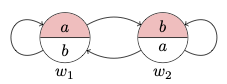
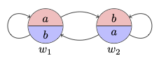

19 Constant Domain Models
We have provided a syntactic characterization of the simplest quantified modal logic, but we should now explain how to interpret the language in order to validate its axioms.
Definition 19.1 (Constant Domain Model) We define a constant domain model to be structure \(M\) of the form \((W, R, D, I)\), where:
- \(W\) is a non-empty set of worlds.
- \(R\) is a binary accessibility relation on \(W\)
- \(D\) is a non-empty set of individuals, and
- \(I\) is a function from worlds \(w\) into interpretations \(I_w\), which map each \(n\)-place predicate \(P^n\) into an \(n\)-place relation over \(D\).
Definition 19.2 (Variable Assignment for a Model) A variable assignment \(\alpha\) for a model \(M\) is a function from individual variables into members of \(D\).
We now define what is for a formula \(\varphi\) to be true at a world \(w\) in a model \(M\) relative to an assignment \(\alpha\). In what follows, \(\alpha[x/d]\) is an assignment just like \(\alpha\) except perhaps for assigning \(d\) to the variable \(x\).
Definition 19.3 (Truth at a World Relative to an Assignment) We use a recursive definition: \[ \begin{array}{lll} M, w, \alpha \Vdash P^n v_1 \dots v_n & & \text{if, and only if,} & & \langle \alpha(v_1), \dots, \alpha(v_n)\rangle \in I_w (P^n)\\ M, w, \alpha \Vdash v_1 = v_2 & & \text{if, and only if,} & & \alpha(v_1) = \alpha(v_2)\\ M, w, \alpha \Vdash \neg \varphi & & \text{if, and only if,} & & M, w, \alpha \nVdash \varphi \\ M, w, \alpha \Vdash (\varphi \to \psi) & & \text{if, and only if,} & & M, w, \alpha \nVdash \varphi \ \text{or} \ M, w, \alpha \Vdash \psi\\ M, w, \alpha \Vdash \forall x \ \varphi & & \text{if, and only if,} & & M, w, \alpha[x/d] \Vdash \varphi \ \text{for every} \ d\in D\\ M, w, \alpha \Vdash \Box \ \varphi & & \text{if, and only if,} & & M, u, \alpha \Vdash \varphi \ \text{for every} \ u \in W \ \text{such that} \ Rwu\\ \end{array} \]
We now define truth at a world in a model and truth in. a model respectively:
Definition 19.4 (Truth at a World) A formula \(\varphi\) is true at a world \(w\) in a model \(M\), in symbols \(M, w \Vdash \varphi\), if, and only if, for all assignments \(\alpha\) for \(M\), \(M, w, \alpha \Vdash \varphi\)
Definition 19.5 (Truth in a Model) A formula \(\varphi\) is true in a model \(M\), in symbols, \(M \Vdash \varphi\), if, and only. if, for all \(w \in W\), \(M, w \Vdash \varphi\).
Definition 19.6 (Validity in a Class of Models) A formula \(\varphi\) is valid with respect to a class \(\mathcal{C}\). of constant domain models, in symbols \(\models_{\mathcal{C}}\varphi\), if, and only if, for every constant domain model \(M \in \mathcal{C}\), \(M \Vdash \varphi\).
It will be helpful to provide some illustration. We explain first how to justify the fact that a certain formula is not valid with respect to the class of reflexive and euclidean models.
Example 19.1 \(\not \models_{\text{refl and eucl}} \exists x \neg \Box Fx \to \Diamond \forall x \neg Fx\)
Consider a constant domain model \(M\) of the form \(( W, R, D, I)\), where:
\(W = \{w_1, w_2\}\)
\(R = \{(w_1, w_1), ( w_1, w_2), (w_2, w_1), (w_2, w_2)\}\)
\(D = \{a, b\}\)
\(I_{w_1}(F) = \{a\}\)
\(I_{w_2}(F) = \{b\}\)
Here is a diagram for the model:

Now:
\(M, w_1 \Vdash \exists x \neg \Box Fx\) because \(M, w_1, \alpha[b/x] \Vdash \neg \Box Fx\)
\(M, w_1 \nVdash \Diamond \forall x \neg Fx\) because \(M, w_1 \Vdash \forall x \neg Fx\) and \(Rw_1w_1\).
Example 19.2 \(\not \models_{\text{refl and eucl}} (\Box \exists x Fx \vee \forall x \Diamond Gx)\to \Diamond \exists x (Fx \wedge Gx)\)
Consider a constant domain model \(M\) of the form \(( W, R, D, I)\), where:
\(W = \{w_1, w_2\}\)
\(R = \{( w_1, w_1), ( w_1, w_2), (w_2, w_1), ( w_2, w_2) \}\)
\(D = \{a, b\}\)
\(I_{w_1}(F) = \{a\}\), \(I_{w_1}(G) = \{b\}\)
\(I_{w_2}(F) = \{b\}\), \(I_{w_2}(G) = \{a\}\)
Here is a diagram for the model:

Now:
\(M, w_1 \Vdash \Box \exists x Fx\) since \(M, w_1 \Vdash \exists x Fx\) and \(M, w_2 \Vdash \exists x Fx\)
\(M, w_1 \nVdash \Diamond \exists x (Fx \wedge Gx)\) since \(M, w_1 \nVdash \exists x (Fx \wedge Gx)\) and \(M, w_2 \nVdash \exists s (Fx \wedge Gx)\)
Example 19.3 \(\not \models_{\text{refl and eucl}} \forall x (\Box Fx \vee \Box \neg Fx) \vee \forall x (\Diamond Fx \wedge \Diamond \neg Fx)\)
Consider a constant domain model \(M\) of the form \(( W, R, D, I)\), where:
\(W = \{w_1, w_2\}\)
\(R= \{(w_1, w_1), ( w_1, w_2), (w_2, w_1), ( w_2, w_2)\}\)
\(D = \{a, b\}\)
\(I_{w_1}(F) =\{a\}\)
\(I_{w_2}(F) = \emptyset\)
Here is a diagram for the model:

Now:
\(M, w_1 \nVdash \forall x (\Box Fx \vee \Box \neg Fx)\) because \(M, w_1, \alpha[a/x] \nVdash \Box Fx \vee \Box \neg Fx\). Yet:
\(M, w_1 \nVdash \forall x (\Diamond Fx \wedge \Diamond \neg Fx)\) because \(M, w_1, \alpha[b/x]\nVdash \Diamond Fx \wedge \Diamond \neg Fx\).
On the other hand, we may verify that constant domain models validate both the Barcan Formula and the Converse Barcan Formula.
Example 19.4 \(\models \Diamond \ \exists x \ Fx \to \exists x \ \Diamond \ Fx\)
Given a constant domain model \(M\) and a world \(w\in W\) such that \(M, w \Vdash \Diamond \ \exists x \ Fx\), let \(u \in W\) be such that \(Rwu\) and \(M, u \Vdash \exists x \ Fx\). That means that there is a member \(d \in D\) such that for each assignment \(\alpha\), \(M, u, \alpha[d/x] \Vdash Fx\). But then \(M, w, \alpha[d/x]\Vdash \Diamond \ Fx\) and, moreover, \(M, w, \alpha \Vdash \exists x \ \Diamond \ Fx\). Since \(\alpha\) is arbitrary, \(M, w \Vdash \Diamond \ \exists x \ Fx\) as required.
Example 19.5 \(\models \Box \ \forall x \ Fx \to \forall x \ \Box \ Fx\)
Given a constant domain model \(M\) and a world \(w\in W\) such that \(M, w \Vdash \Box \ \forall x \ Fx\), we argue that \(M, w \Vdash \forall x \ \Box \ Fx\). For given an assignment \(\alpha\) and a member \(d \in D\), \(M, w, \alpha[d/x] \Vdash \Box Fx\). This is because given a world \(u\in W\) such that \(Rwu\), we have \(M, u \Vdash \forall x Fx\) and \(M, u, \alpha[d/x]\Vdash Fx\). Since \(u\) and \(d\) Are arbitrary, \(M, w \Vdash \forall x \ \Box \ Fx\) as required.
Free Quantified Modal Logic
One reaction to the derivability of the Barcan Formula and its converse in the simplest quantified modal logic is to regard it as a reason to weaken the axioms for the quantifier. Free quantified modal logic makes do with a restricted form of universal instantiation. Before we look at the details, we should however mention that there are independent reasons to consider such a restriction.
Free Quantificational Logic
Some philosophers have questioned quantificational logic on the grounds that it delivers objectionable theorems such as existential generalization: \[\tag{EG} \varphi(y) \to \exists x \ \varphi(x) \] Here is a proof schema: \[ \begin{array}{lllll} 1 & & \forall x \ \neg \varphi(x) \to \neg \varphi(y) & & \text{UI} \\ 2 & & \neg \neg \varphi(y) \to \neg \forall x \neg \varphi(x) & & \text{PL} \ 1\\ 3 & & \varphi(y) \to \neg \forall x \neg \varphi(x) & & \text{PL} \ 2\\ 4 & & \varphi(y) \to \exists x \varphi(x) & & \text{Def} \ \exists \ 3\\ \end{array} \] How might existential generalization be objectionable?
Existential generalization delivers problematic consequences in the presence of terms without denotation. For suppose we expand the language of quantificational logic with constants some of which are meant to translate singular terms without a denotation, e.g., ‘Pegasus’. One problem is that existential generalization delivers: \[ \vdash \exists x \ x = c \] Here is a simple proof: \[ \begin{array}{lllll} 1 & & c = c & \text{RI} \\ 2 & & c = c \to \exists x \ x = c & \text{EG} \\ 3 & & \exists x \ x = c & \text{PL} \ 1, 2\\ \end{array} \] But if \(c\) lacks a denotation, we should not be able to move from \(c = c\) to \(\exists x \ x =c\).
Existential generalization allows us to move from a universal generalization to an existential one: \[ \vdash \forall x \ \varphi(x) \to \exists x \ \varphi(x) \] This conflicts with the thought that a universal generalization could be true even if there turned out to be no instances, e.g., if nothing existed. From \(\forall x (Fx \vee \neg Fx)\) we should not be able to conclude \(\exists x (Fx \vee \neg Fx)\). One way to put is is that it is now a logical truth that something is either \(F\) or not \(F\): \[ \vdash \exists x (Fx \vee \neg Fx) \]
One response to these observations is to restrict the axiom of unversal instantiation to avoid the full strength of existential generalization. This in turn may be done in more than one way resulting in different approaches to quantified modal logic.
Varieties of Free Quantified Modal Logic
We will look at two main restrictions of the axiom of universal instantiation. One of them is directly motivated by the derivability of the Converse Barcan formula in the simplest quantified modal logic, whereas the other is motivated by the ambition to accommodate free expansions of quantificational logic in which singular terms are allowed to lack a denotation.
Kripke on Universal Instantiation
We begin with a proposal due to Saul Kripke who weakens universal instantiation as follows: \[\tag{KFUI} \forall y (\forall x \ \varphi(x) \to \varphi[y/x]) \] where \(\varphi[y/x]\) is, as usual, the result of replacing every free occurrence of the variable \(x\) in \(\varphi\) with an occurrence of the variable \(y\) relettering if necessary to make sure occurrences of \(y\) remain free after the replacement. Before we look at the proposal in some detail, we may consider Kripke’s own motivation for it. He has in mind the following derivation of an instance of the Converse Barcan Formula in the simplest quantified modal logic: \[ \begin{array}{lllll} 1 & & \forall x \ Fx \to Fy & \text{UI} \\ 2 & & \Box (\forall x \ Fx \to Fy) & \text{RN} \ 1 \\ 3 & & \Box (\forall x \ Fx \to Fy) \to (\Box \forall x \ Fx \to \Box \ Fy) & \text{K} \\ 4 & & \Box \forall x \ Fx \to \Box \ Fy & \text{PL} \ 2, 3 \\ 5 & & \Box \forall x \ Fx \to \forall x \ \Box \ Fx & \text{UG} \ 4 \\ \end{array} \] This is what he writes:
Actually, the flaw lies in the application of necessitation to [1]. In a formula like [1], we give the free variables the generality interpretation: when [1] is asserted as a theorem, it abbreviates an assertion of its ordinary universal closure: \[ \begin{array}{lllll} [1'] & \forall y (\forall x Fx \to Fy) \end{array} \] Now, if we applied necessitation to [1’], we would get \[ \begin{array}{lllll} [2'] & \Box \ \forall y \ (\forall x Fx \to Fy) \end{array} \] On the other hand, [2] itself is interpreted as asserting: \[ \begin{array}{lllll} [2''] & \forall y \ \Box \ (\forall x Fx \to Fy) \end{array} \] To infer [2’’] from [2’], we would need a law of the form \(\Box \ \forall y \ Cy \to \forall y \ \Box Cy\), which is just the converse Barcan formula we are trying to prove […]. We can avoid this sort of difficulty if, following Quine, we formulate quantification theory so that only closed formulae are asserted. Assertion of formulae containing free variables is at best a convenience; assertion of \(\varphi(x)\) with free \(x\) can always be replaced by assertion of \(\forall x \ \varphi(x)\).
So, Kripke’s suggestion is to block the application of necessitation to open formulas by adopting a formulation of quantificational logic without open formulas as axioms. Hence the proposal to weaken UI to KFUI, which is its universal closure. As it turns out, Kripke’s proposal requires the adoption of a further quantificational axiom: \[ \forall x \ \forall y \ Rxy \to \forall y \ \forall x \ Rxy \] Notice that we are still in a position to define existence in terms of quantification and identity. What we no longer have is a derivation of existential generalization. At most, we are in a position to derive: \[ \begin{array}{lllll} 1 & & \forall y \ (\forall x \ \neg \varphi(x) \to \neg \varphi(y)) & & \text{KFUI} \\ 2 & & \forall y (\neg \neg \varphi(y) \to \neg \forall x \neg \varphi(x)) & & \text{PL} \ 1\\ 3 & & \forall y (\varphi(y) \to \neg \forall x \neg \varphi(x)) & & \text{PL} \ 2\\ 4 & & \forall y (\varphi(y) \to \exists x \varphi(x)) & & \text{Def} \ \exists \ 3\\ \end{array} \] We similarly have: \[ \vdash \forall x \ (x = x \to \exists y \ x =y) \] and \[ \vdash \forall x \ x = x \to \forall x \ \exists y \ x =y \] but either theorem is harmless when it comes to being able to derive the necessity of existence.
Existence in Free Quantificational Logic
The other approach to free quantificational logic is designed to accommodate singular terms without a denotation. That is, the approach is supposed to accommodate the introduction of new constants, which fail to denote a member of the domain. The thought in this case is to augment the language of quantificational logic with a primitive existence predicate \(E\), which would apply to a constant \(c\) only if the constant designates something in the domain. Otherwise, \(\neg Ec\) would be true and express the fact that nothing is \(c\).
Given such a predicate, we are in a position to reformulate free universal instantiation as follows: \[\tag{EFUI} \forall x \ (\varphi(x) \to (Ey \to \varphi[y/x]) \] where \(\varphi[y/x]\) is, as usual, the result of replacing every free occurrence of the variable \(x\) in \(\varphi\) with an occurrence of the variable \(y\) relettering if necessary to make sure occurrences of \(y\) remain free after the replacement. This is what free existential generalization looks like on this approach: \[ \begin{array}{lllll} 1 & & \forall x \ \neg \varphi(x) \to (Ey \to \neg \varphi(y)) & & \text{EFUI} \\ 2 & & (Ey \wedge \neg \neg \varphi(y)) \to \neg \forall x \neg \varphi(x) & & \text{PL} \ 1\\ 3 & & (Ey \wedge \varphi(y)) \to \neg \forall x \neg \varphi(x) & & \text{PL} \ 2\\ 4 & & (Ey \wedge \varphi(y) \to \exists x \varphi(x) & & \text{Def} \ \exists \ 3\\ \end{array} \]
One difference between this move and Kripke’s move is that it allows for the use of open formulas as axioms of quantificational logic and provides a different response to the argument for the necessity of existence. All we are able to do now is the following: \[ \begin{array}{lllll} 1 & & x = x & & \text{RI} \\ 2 & & (Ex \wedge x = x) \to \exists y \ x = y& & \text{EG} \\ 3 & & Ex \to \exists y \ x = y & & \text{PL} \ 1, 2\\ 4 & & \Box (Ex \to \exists y \ x = y) & & \text{RN} \ 3\\ 5 & & \forall x \ \Box (Ex \to \exists y \ x = y)& & \text{UG} \ 4\\ \end{array} \] But this is again harmless from the standpoint of a proponent of the contingency of existence.